k-Day 166｜一半
昨晚大費周章用外帳罩住破口，內側以車包、衣物盡量塞住內帳縫隙。
沒有用，一切都是徒勞。
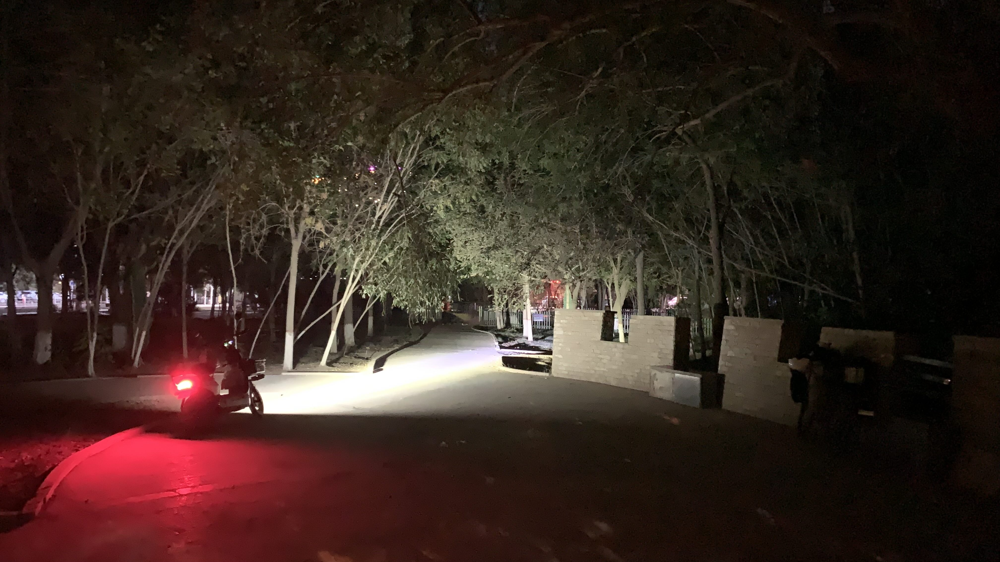
天未亮已經被蚊子咬的體無完膚，只好爬出帳篷草草收拾。
戴上頭燈收拾帳篷，竟然發現靠近頭部的樹根旁有一條超大條新鮮的人類排泄。昨晚急著找地方躲藏，沒有開燈檢查的後果就是伴著屎味入眠。
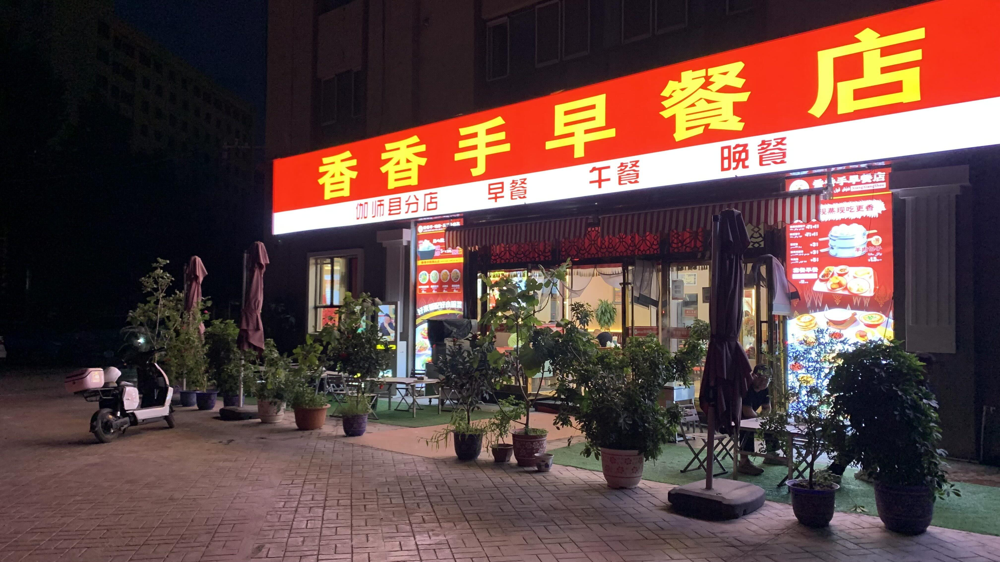
睡不飽就用食物來補償。
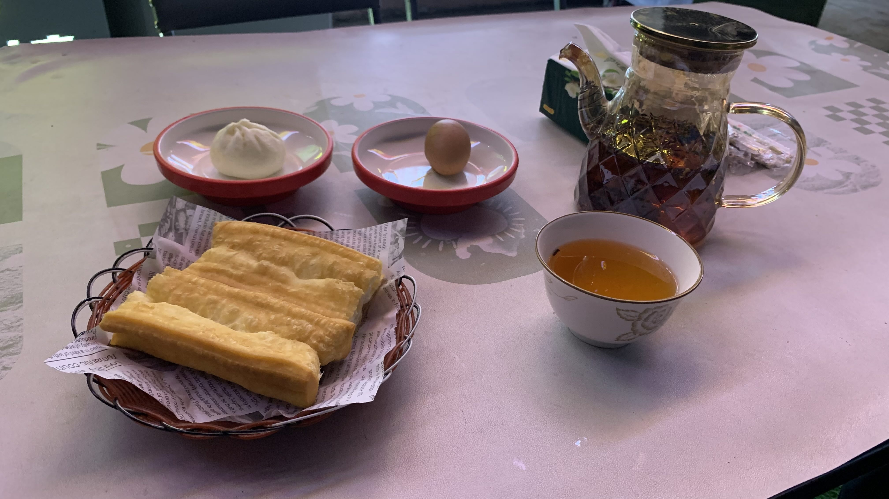
油條、包子、雞蛋，一碗奶茶。
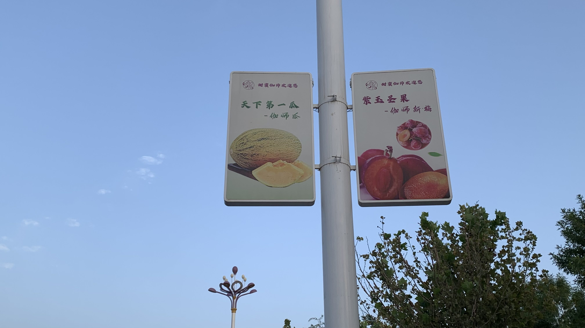
這些燈柱下方一般都是安裝五星旗的，只有在伽師看到這樣的廣告。感覺此地很重視自己的農特產推廣，給予好評。
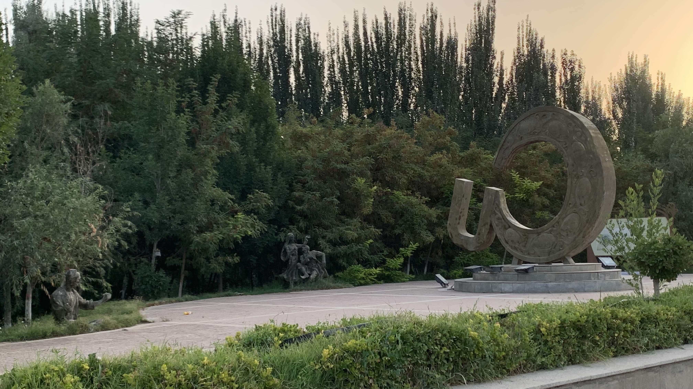
在路旁發現一組迷樣雕塑，沒睡飽，無法細品。
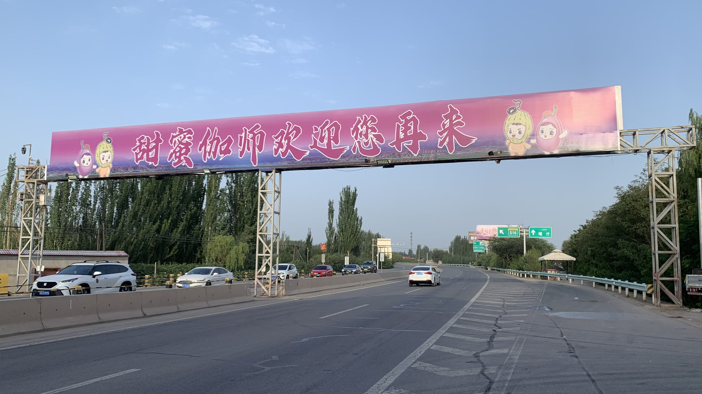
這麼快就離開伽師了？我挺喜歡這個地方的！
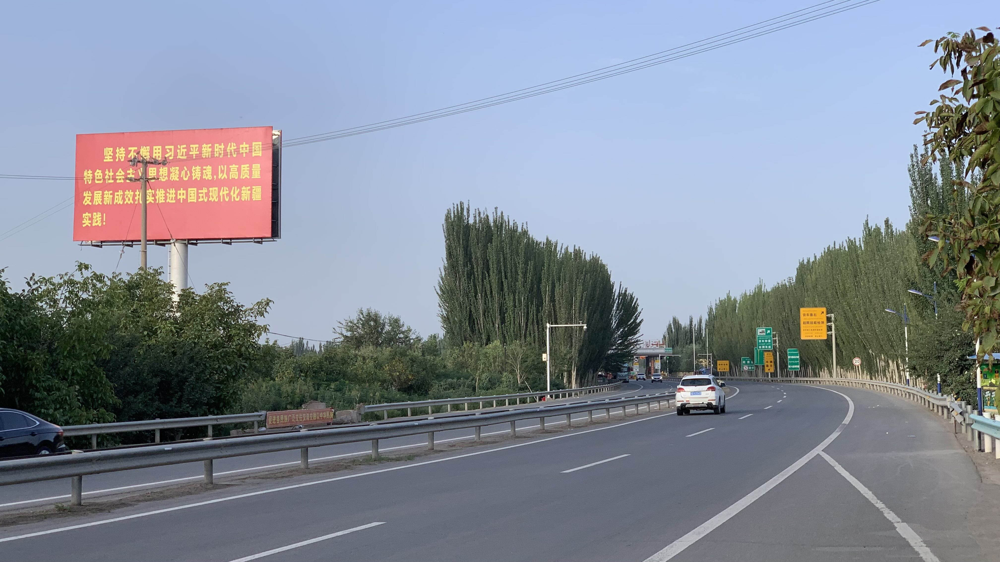
習主席的話要牢記在心。
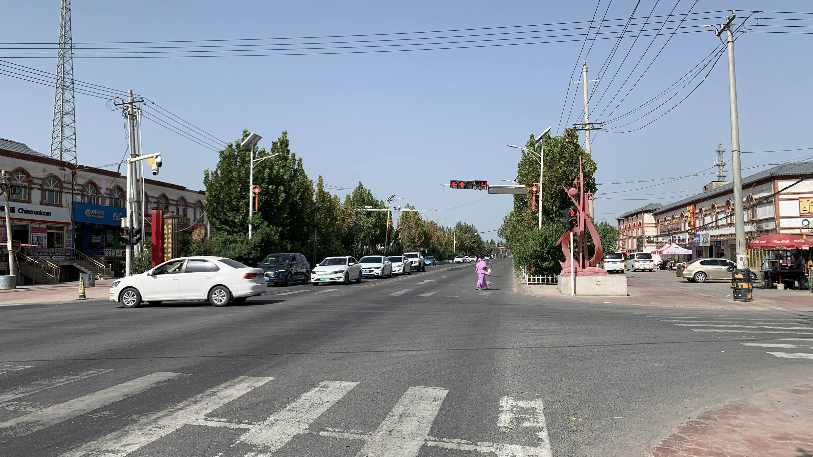
今天一路上都是這樣的聚落，看來伽師和喀什之間人口相當密集。
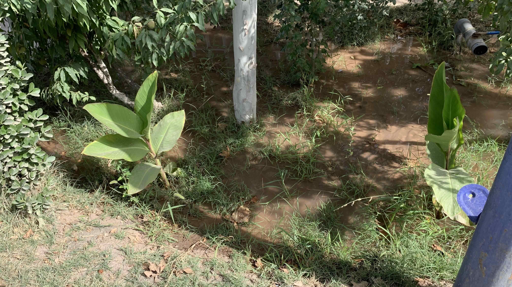
其實我對這樣的灌溉方式相當好奇，路邊的水管都是豪邁噴水，行道樹下積了一灘水坑，此處難道不是水資源匱乏地區嗎？
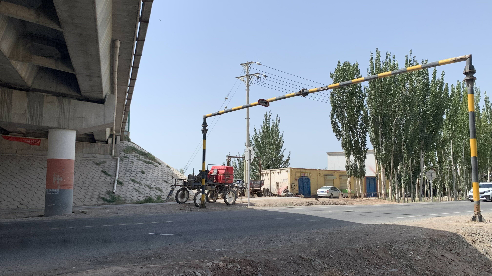
路邊看到一輛帥氣的農用車。
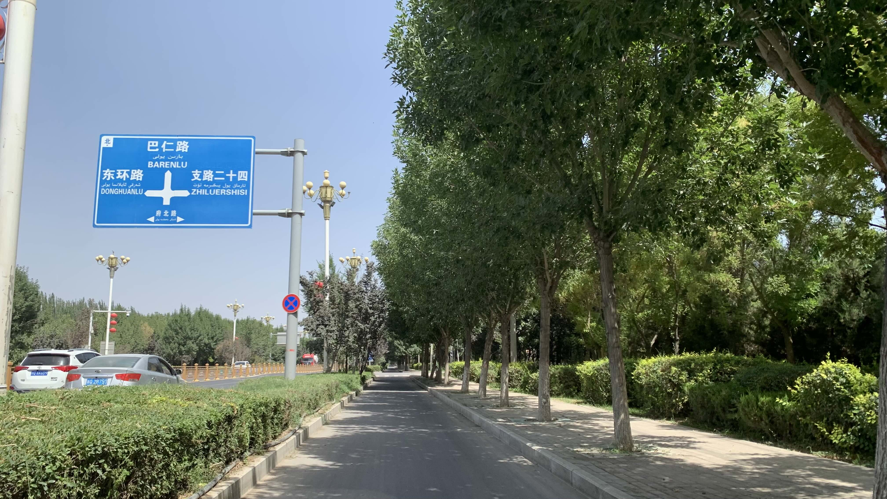
看到這樣規劃一致的行道樹和標配路燈，就快進入喀什市區了。
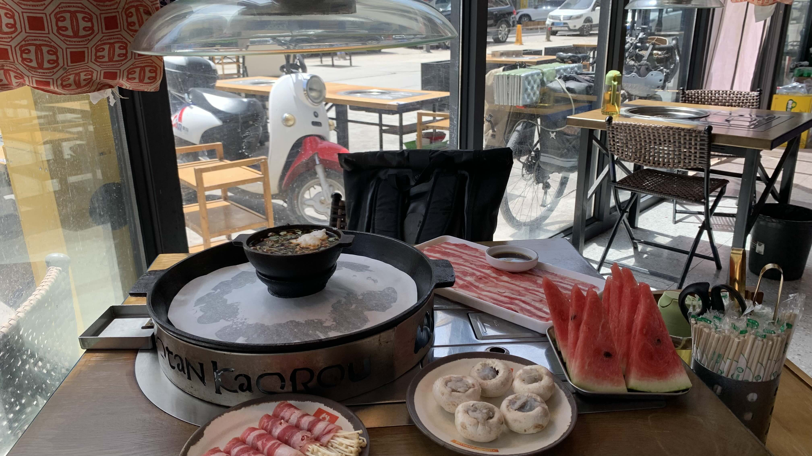
還沒到入住時間，在地圖上找了一家評價不錯的烤肉店。點了一盤肉、培根金針菇和蘑菇包蝦泥。主食和飲料自取。吃了一碗飯，掃光三個盤子。肉片薄如蟬翼，西瓜是服務員端來的，已經放得變質了。
結帳是107元。過分了。
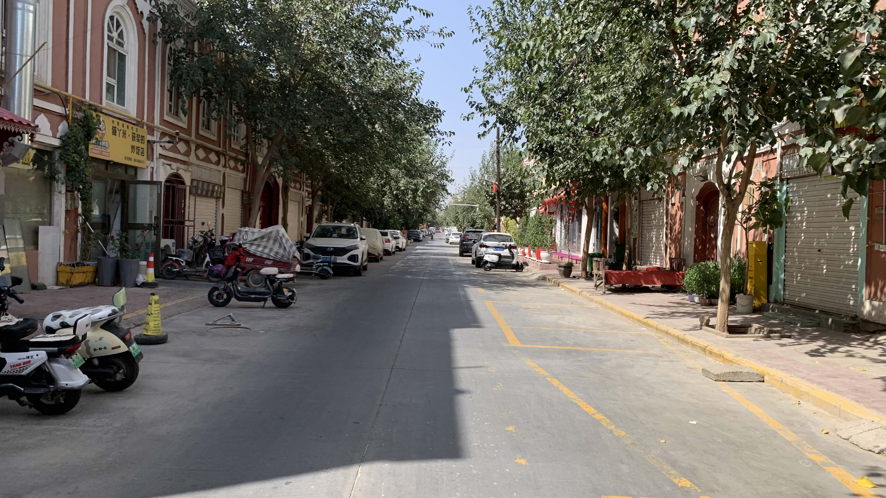
委屈地慢慢移動到民宿，似乎是普通的住宅區。路邊有許多裁縫店，明天也許可以出來換拉鍊。
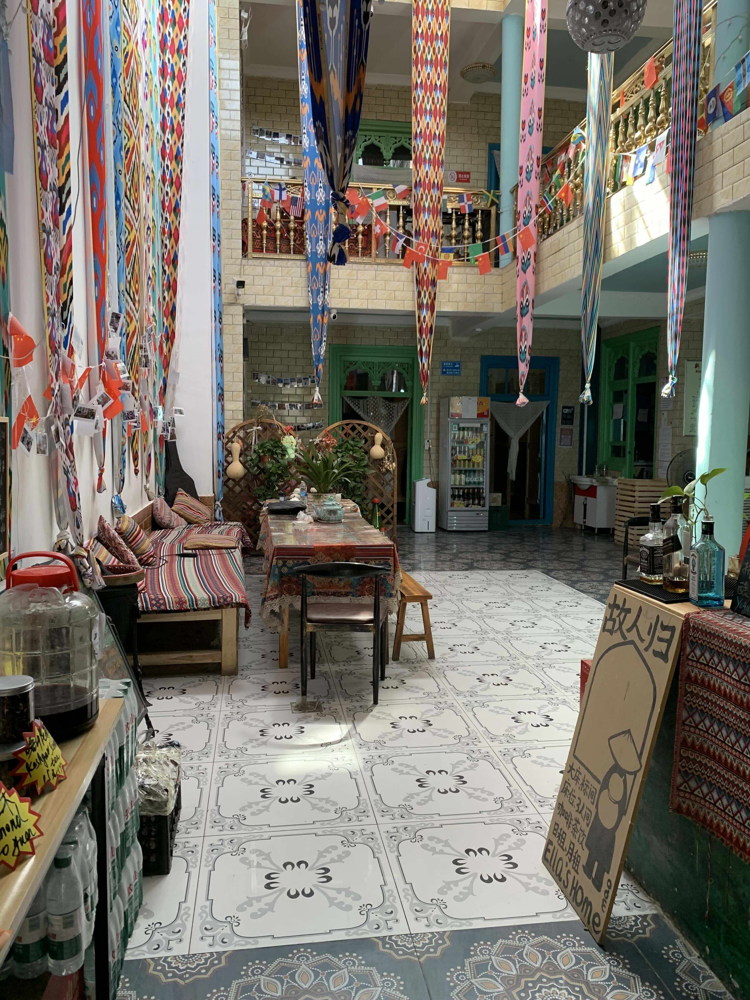
內裝看來相當不錯呢。四人房床位一晚52元。
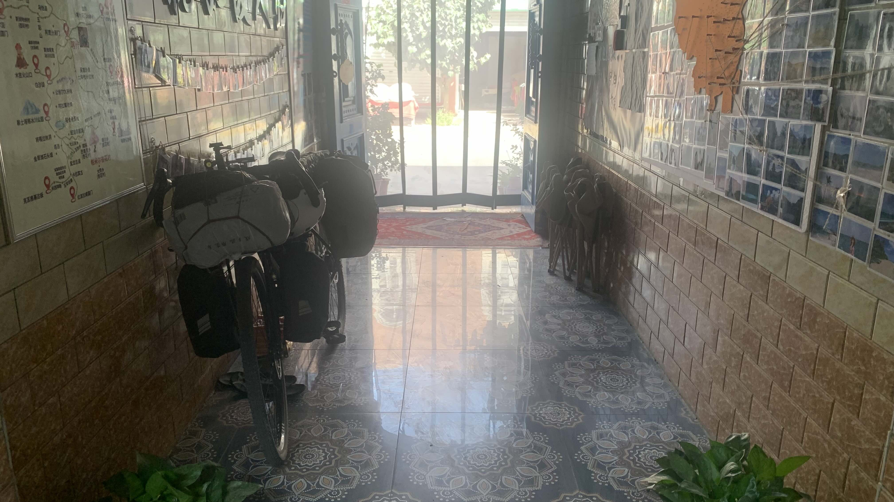
二十三號停在門口，至此應該是歐亞大陸剛好一半的距離。
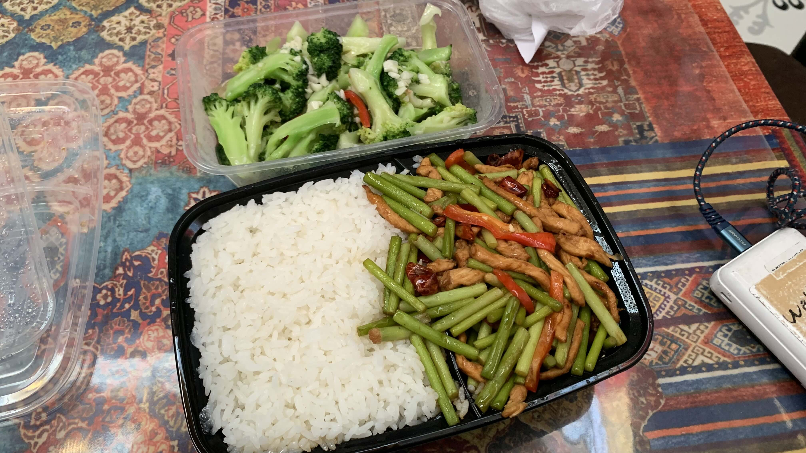
下午沒吃飽，報復性點了外賣，搭配一杯珍珠奶茶和一杯類百香雙響炮的飲品。
老闆問我為啥不出門吃，我說了下午的故事，他大笑著說：「那一定是漢人開的，你被坑了。」並轉身和其他旅客分享。
老闆好像已經忘了自己也是漢人啊 ( ´ ▽ ` )ﾉ
今日花費：早餐 10、烤肉 107.7、晚餐 59.8、蜜雪冰城 20、民宿綠茶 5、住宿（2）晚 104 元